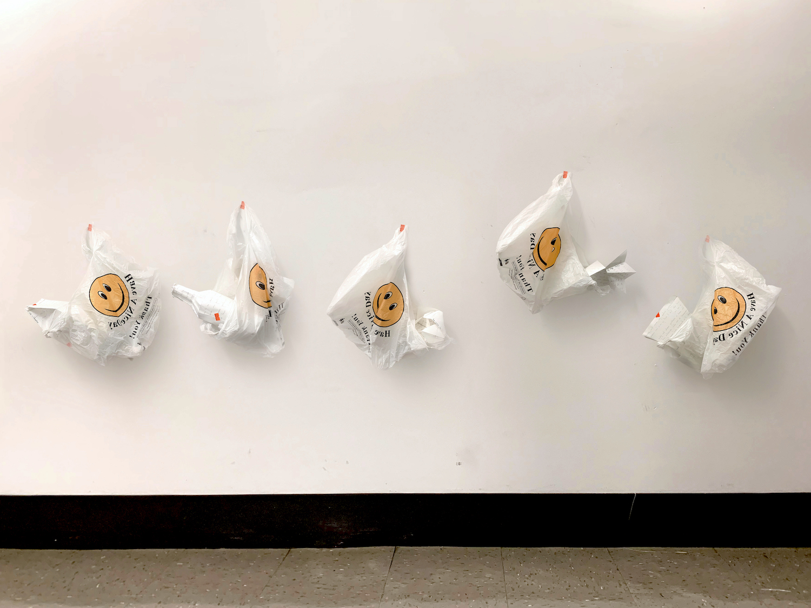
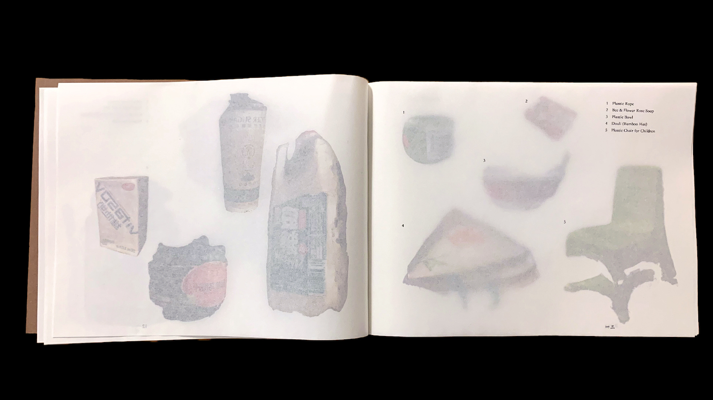

Her name is Hong Kong Market.
She is an Asian grocery store, living just across the way. I pay her a visit weekly. It has become my routine since I started living abroad.
I cannot fully describe my feeling when I first walked inside. It is a strange mixture. On one hand, her familiar messiness is so deeply rooted in my memory of the market back home, to which my mother used to take me when I was a kid. On the other hand, her words, especially the classical Chinese characters everywhere; her sound, actually she barely makes any sound; her smell…all these aspects of her are extremely unfamiliar to me. I feel connected to her, while simultaneously being pushed away from her. I was like a magnet, trying to approach her only to find out that her magnetic field repels me.
My opposing feeling for her truly triggered my interest to observe her—to find the “Chineseness” inside her that familiarizes me, as well as to figure out the “Foreignness” embedded in her that defamiliarizes me.
She is an Asian grocery store, living just across the way. I pay her a visit weekly. It has become my routine since I started living abroad.
I cannot fully describe my feeling when I first walked inside. It is a strange mixture. On one hand, her familiar messiness is so deeply rooted in my memory of the market back home, to which my mother used to take me when I was a kid. On the other hand, her words, especially the classical Chinese characters everywhere; her sound, actually she barely makes any sound; her smell…all these aspects of her are extremely unfamiliar to me. I feel connected to her, while simultaneously being pushed away from her. I was like a magnet, trying to approach her only to find out that her magnetic field repels me.
My opposing feeling for her truly triggered my interest to observe her—to find the “Chineseness” inside her that familiarizes me, as well as to figure out the “Foreignness” embedded in her that defamiliarizes me.